| 版本 | 日期 | 状态 | 修订人 | 摘要 |
|---|---|---|---|---|
| V1.0 | 2018-04-27 | 创建 | 开源方案 | 初始版本 |
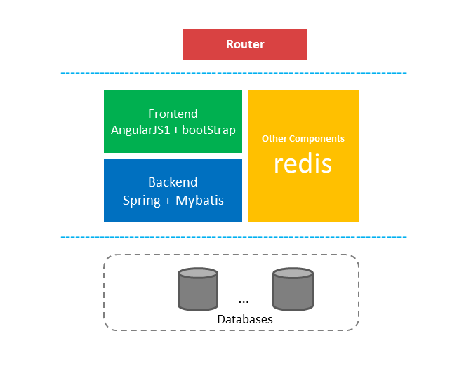
标准的三层应用 前端 + 后端(Redis Cache) + 数据库
cboard 是易用的,自服务的开源BI dashboard 应用 详细信息请参考 https://github.com/TuiQiao/CBoard
后面操作基本都是 使用Openshift web console 进行应用部署
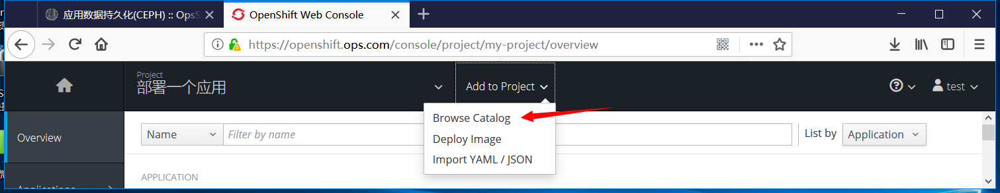
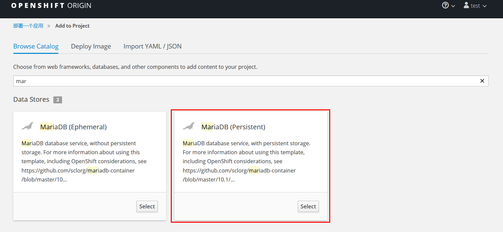
这里使用持久化的数据库,防止数据丢失 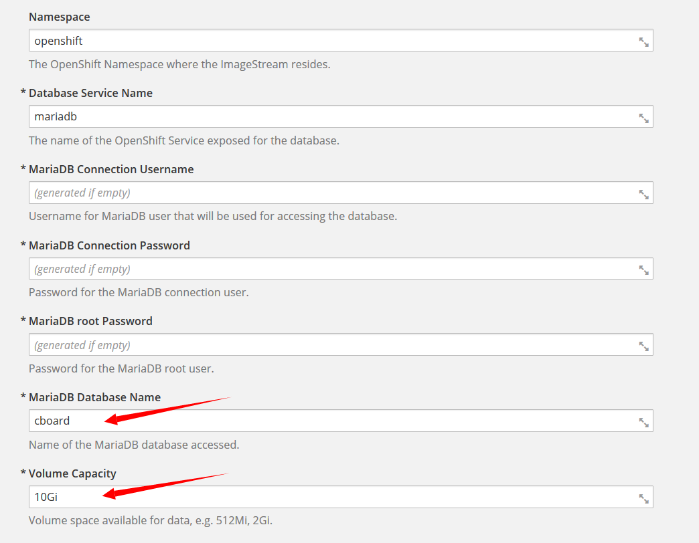
注意红色箭头 一个是设定默认创建的的数据库(cboard) 一个是设定持久卷大小(10Gi) 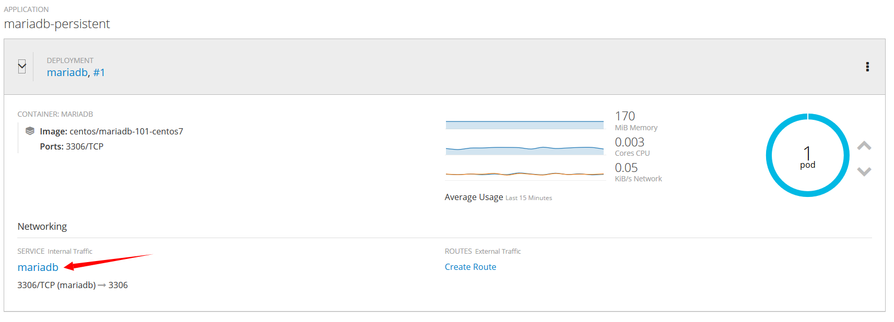
部署完成后,服务正常 红色箭头指向的service name mariadb,在集群内部可以使用此名称 访问数据库
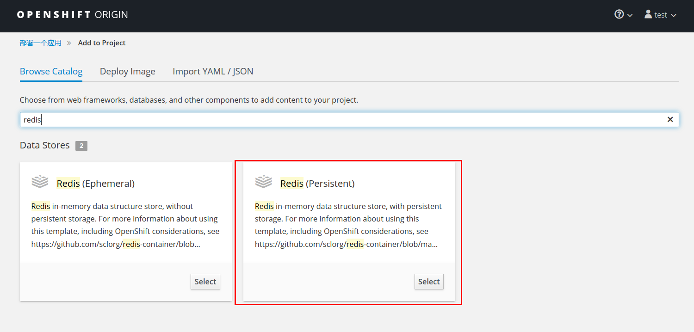
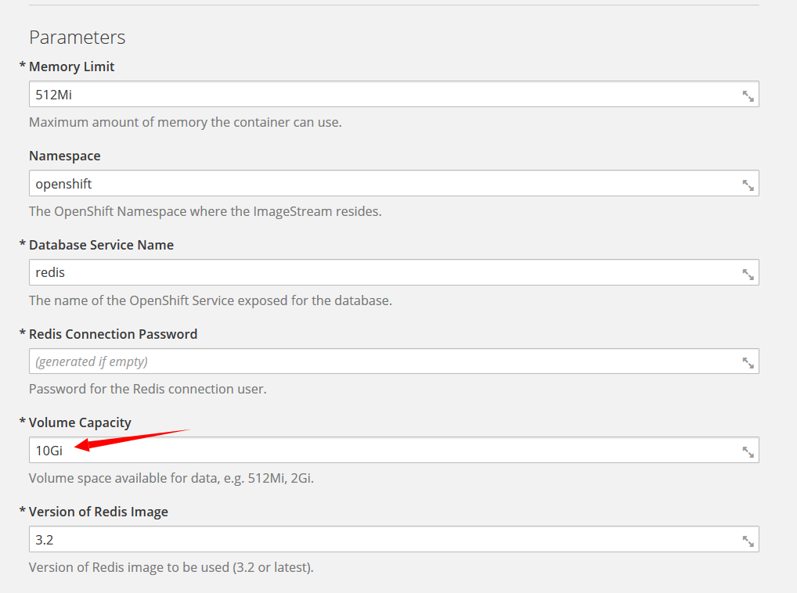
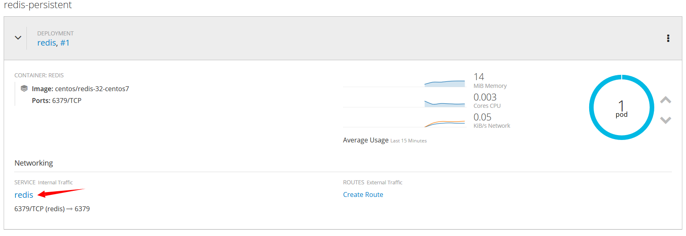
参照部署mariadb方式，通过catalog中 redis持久化模板创建应用即可
前面将cboard应用依赖的服务已经部署完成,下面将通过Source-to-Image builder来部署cboard应用
这里我们使用 S2I Build 镜像制作 tomcat版本的S2I BUILDER来构建部署cboard应用
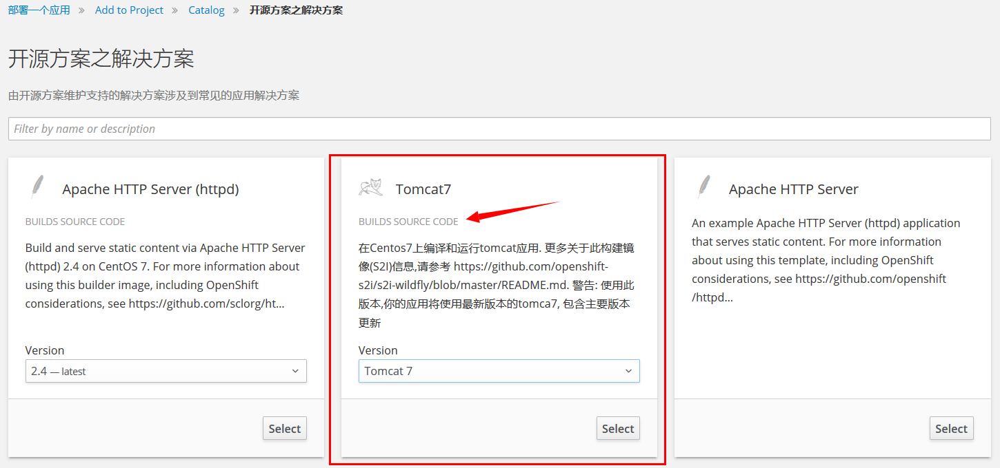
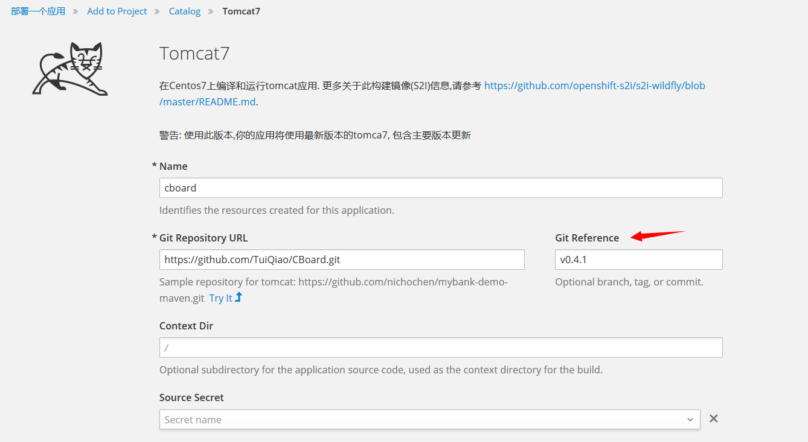
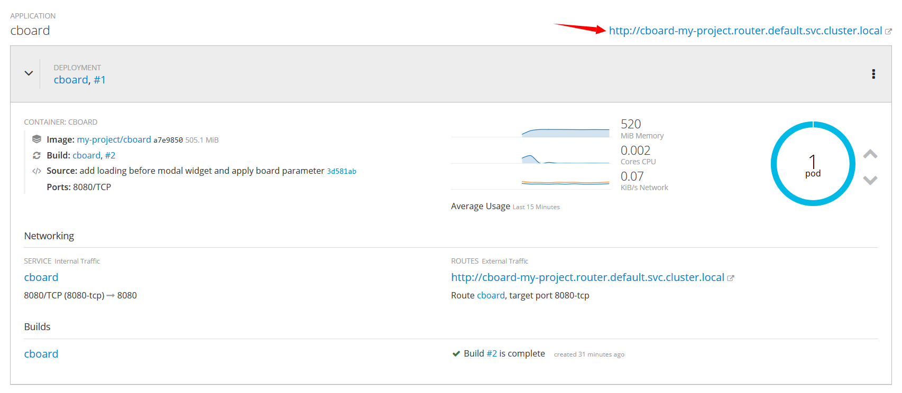
这里分支我们指向的是v0.4.1,根据网速快慢,过一定时间就会build完成
虽然cboard的pod已经正常运行了，但是数据库的初始化,数据库连接配置 都没有修改 都是默认的,还需要后面的工作才能让应用程序可用
登陆容器(openshift master节点)
# oc project
Using project "my-project" on server "https://192.168.124.22:8443".
# oc get pod
NAME READY STATUS RESTARTS AGE
cboard-1-m4j6b 1/1 Running 0 2h
cboard-2-build 0/1 Completed 0 2h
mariadb-1-kz485 1/1 Running 1 1d
redis-1-kcks5 1/1 Running 0 5h
[root@openshift-master ~]# oc rsh cboard-1-m4j6b
sh-4.2$
观察容器中的环境变量
sh-4.2$ set |grep "REDIS"
REDIS_PORT=tcp://172.30.71.182:6379
REDIS_PORT_6379_TCP=tcp://172.30.71.182:6379
REDIS_PORT_6379_TCP_ADDR=172.30.71.182
REDIS_PORT_6379_TCP_PORT=6379
REDIS_PORT_6379_TCP_PROTO=tcp
REDIS_SERVICE_HOST=172.30.71.182
REDIS_SERVICE_PORT=6379
REDIS_SERVICE_PORT_REDIS=6379
sh-4.2$ set |grep "MARIADB"
MARIADB_PORT=tcp://172.30.194.134:3306
MARIADB_PORT_3306_TCP=tcp://172.30.194.134:3306
MARIADB_PORT_3306_TCP_ADDR=172.30.194.134
MARIADB_PORT_3306_TCP_PORT=3306
MARIADB_PORT_3306_TCP_PROTO=tcp
MARIADB_SERVICE_HOST=172.30.194.134
MARIADB_SERVICE_PORT=3306
MARIADB_SERVICE_PORT_MARIADB=3306
sh-4.2$
注意: cboard 依赖的服务 mariadb 和 redis 服务信息都以环境变量的方式注入到容器中了(同一个项目下的容器服务信息是通过这种方式共享的)
首先我们要找到数据库随机生成的用户和密码信息
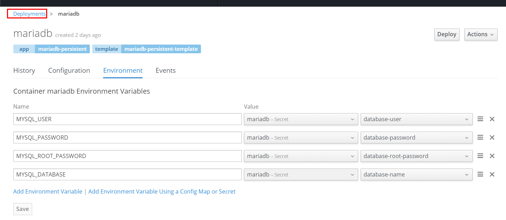
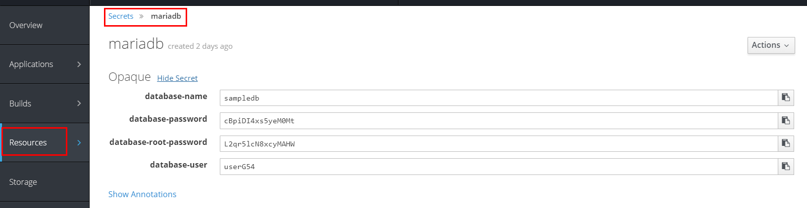
从上图知道,数据库用户密码相关信息通过Deployments(部署配置)加入环境变量的方式,注入到docker中,但是密码信息比较敏感,所以是以secrets方式保存这些信息
参考 maraiadb的部署配置,来设置cboard的部署配置,保存后,会重新部署cboard
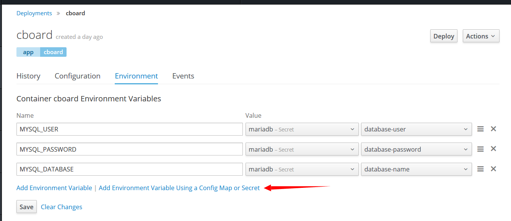
注意: 同一项目中(namespace相同),configmap 或者 secret 是可以通过环境变量共享注入的
# oc rsh cboard-2-3jgt2
sh-4.2$ set | grep mysql -i
MYSQL_DATABASE=sampledb
MYSQL_PASSWORD=cBpiDI4xs5yeM0Mt
MYSQL_USER=userG54
sh-4.2$
可以看到环境变量中已经能够看到数据库相关信息了
增加完成后的内容目录如下
# git branch
master
* ops-tagV0.4.1
# ll
total 64
-rw-r--r-- 1 root root 0 Apr 18 04:06 changelog
-rw-r--r-- 1 root root 1503 Apr 18 04:06 Dockerfile
drwxr-xr-x 7 root root 168 Apr 18 04:06 flyway-5.0.7 # 新增加的目录
drwxr-xr-x 2 root root 217 Apr 18 04:06 lib
-rw-r--r-- 1 root root 21013 Apr 18 04:06 LICENSE.txt
-rwxr-xr-x 1 root root 189 May 8 05:01 migrate-database.sh # 增加的脚本
-rwxr-xr-x 1 root root 16748 Apr 18 04:06 pom.xml
-rw-r--r-- 1 root root 12190 Apr 18 04:06 README.md
drwxr-xr-x 5 root root 50 Apr 18 04:06 sql
drwxr-xr-x 4 root root 30 Apr 18 04:06 src
# cp sql/mysql/mysql.sql flyway-5.0.7/sql/V1__init.sql
# cat migrate-database.sh
#!/bin/bash
set -e
/bin/sh flyway-5.0.7/flyway -user=${MYSQL_USER} -password=${MYSQL_PASSWORD} -url=jdbc:mysql://${MARIADB_SERVICE_HOST}:${MARIADB_SERVICE_PORT}/${MYSQL_DATABASE} migrate
# cat src/main/resources/config.properties
validationQuery=SELECT 1
jdbc_url=jdbc:mysql://${MARIADB_SERVICE_HOST}:${MARIADB_SERVICE_PORT}/${MYSQL_DATABASE}
jdbc_username=${MYSQL_USER}
jdbc_password=${MYSQL_PASSWORD}
#jdbc_url=jdbc:sqlserver://192.168.86.156:1433;databaseName=CBoard_Test
#jdbc_username=uapp_cboard
#jdbc_password=uapp_cboard
# Service configuration
dataprovider.resultLimit=1000000
admin_user_id=1
phantomjs_path=D:/phantomjs-2.1.1-windows/bin/phantomjs.exe
mail.smtp.host=127.0.0.1
mail.smtp.port=8825
mail.smtp.from=test@test.com
#mail.smtp.username=test@test.com
#mail.smtp.password=111111
#mail.smtp.ssl.checkserveridentity=false
# Cache Properties
cache.redis.hostName=redis
cache.redis.port=6379
org.quartz.threadPool.threadCount=10
# Storage File Syatem
# 1 Stores data in file system
aggregator.h2.url=jdbc:h2:~/H2Data/cboard;AUTO_SERVER=TRUE;LOG=0;UNDO_LOG=0
# 2 Stores data outside of the VM's heap - useful for large memory DBs without incurring GC costs.
#aggregator.h2.url=jdbc:h2:nioMemFS:cboard;LOG=0;UNDO_LOG=0
aggregator.h2.database.name=cboard
aggregator.h2.cleanjob.quarz=0 1 0 * * ?
log.negativeFilter=List\\.do
log.positveFilter=
修改完成后,提交代码,修改cboard build配置文件 如下图,分支指向新的分支
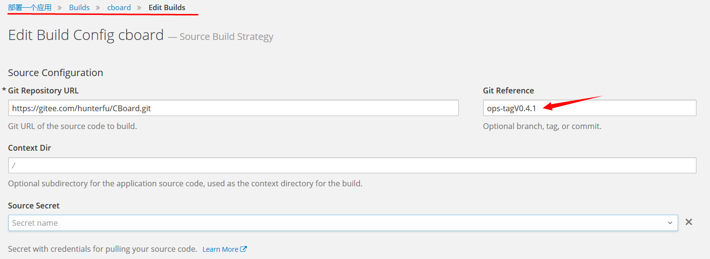
然后手工触发重新build
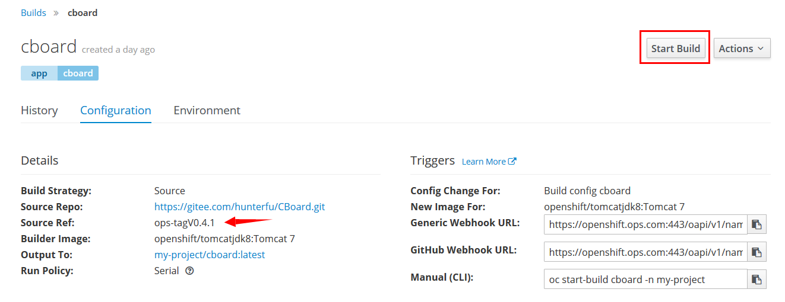
# 默认当前目录就是源码目录
$ oc rsh cboard-3-7jhfn
sh-4.2$ pwd
/opt/app-root/src
sh-4.2$ ls
Dockerfile README.md flyway-5.0.7 migrate-database.sh sql
LICENSE.txt changelog lib pom.xml src
sh-4.2$ sh migrate-database.sh
Flyway Community Edition 5.0.7 by Boxfuse
Database: jdbc:mysql://172.30.194.134:3306/sampledb (MySQL 10.1)
Successfully validated 1 migration (execution time 00:00.024s)
Creating Schema History table: `sampledb`.`flyway_schema_history`
Current version of schema `sampledb`: << Empty Schema >>
Migrating schema `sampledb` to version 1 - init
Successfully applied 1 migration to schema `sampledb` (execution time 00:08.660s)
然后重新部署cboard就可以链接数据库了
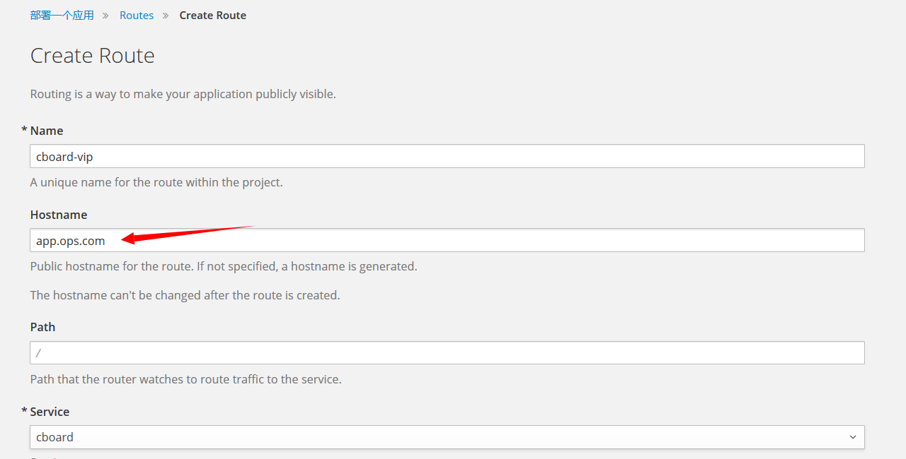
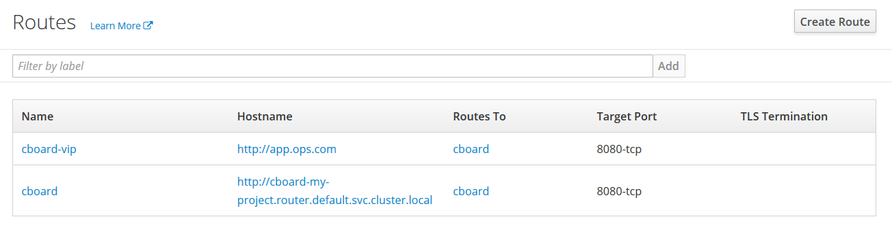
通过浏览器访问 http://app.ops.ops(此域名指向route计算节点IP) 用户名/密码: admin/root123
上述工作中，我们还是手工进入容器,执行了数据库初始化脚本,我们需要用到一个机制,在部署时自动执行脚本
在部署时自动执行脚本,需要设置 cboard DeploymentConfig 加入hook(钩子)
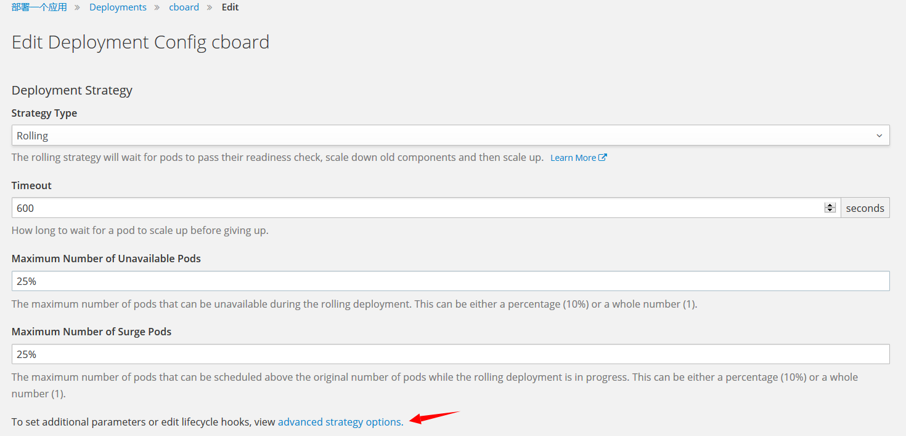
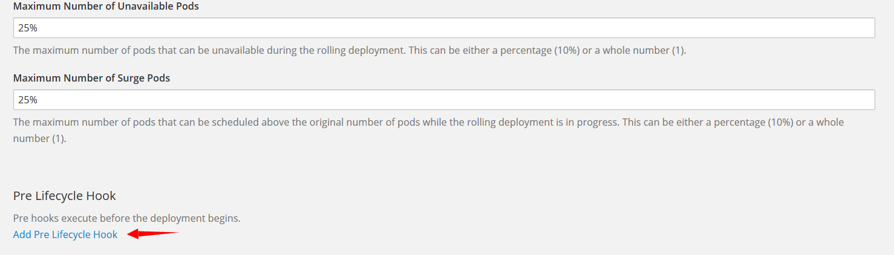
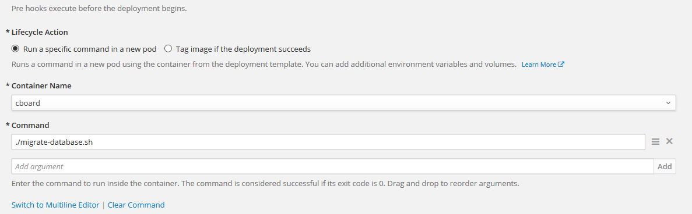
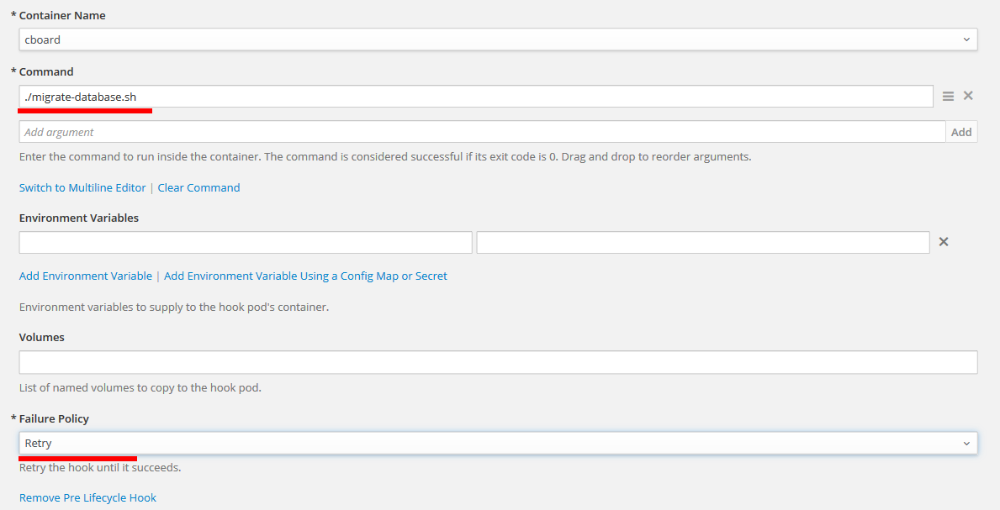
上图操作后,保存配置,在部署cboard应用时会首先执行 migrate-database.sh 脚本命令,策略是retry 来达到自动导入数据任务
migrate-database.sh 这个脚本其实可以写的很高端,比如你可以根据环境变量来决定初始化那些数据,比如导入演示数据等,完全看想象力
通过本实例学习,了解了pod之间数据共享机制,对后续构建微服务,网格化服务等非常有帮
下一篇文档,我们会将此套应用方案,做成模板,实现一键部署
参考资料 https://docs.openshift.org/3.6/dev_guide/deployments/deployment_strategies.html#lifecycle-hooks